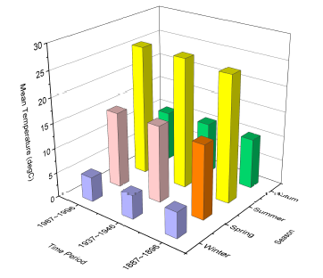

3D-Balkendiagramm mit XY kategorial/Text
3DXYZBar-Text-XY

Datenanforderungen
- Markieren Sie die XYZ-Spalten im Arbeitsblatt. X- und Y-Spalten sollten kategoriale oder Textdaten enthalten.
Oder
- Ein Block von Arbeitsblattzellen (virtuelle Matrix); die X- und Y-Werte sind Text.
Diagramm erstellen
Wählen Sie die gewünschten Daten aus.
Wählen Sie im Menü .
oder
Klicken Sie auf die Schaltfläche 3D-Balken der Symbolleiste 3D- und Konturdiagramme.

Vorlage
- gl3DBARS.OTP (OpenGL)
- 3DBARS.OTP
(installiert im Origin-Programmordner)